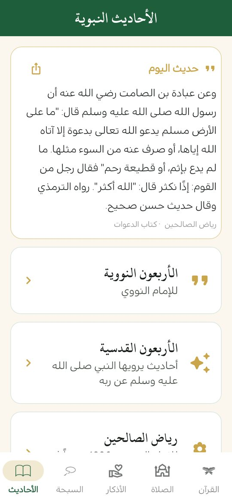

الأحاديث النبوية بدون إنترنت
ثلاث مجموعات من الأحاديث في «منهج حياة»: الأربعون النووية، والأربعون القدسية، ورياض الصالحين كاملاً. مع حديث اليوم، وخط تضبط حجمه، ومشاركة الحديث كصورة. كل ذلك دون إنترنت.
النسخة الخفيفة تنزّل صفحات المصحف عند فتحها أول مرة (تحتاج إنترنت). تريد المصحف كاملاً دون إنترنت؟ حمّل النسخة الكاملة ( م.ب)
ملف APK لأندرويد 7.0 فأحدث · مجاني · دون إعلانات

ثلاث مجموعات
- الأربعون النووية للإمام النووي.
- الأربعون القدسية: أحاديث يرويها النبي ﷺ عن ربه.
- رياض الصالحين كاملاً (1896 حديثاً) بأبوابه.
حديث اليوم
في تبويب الأحاديث بطاقة «حديث اليوم» تتجدد يومياً، لتبدأ يومك بحديث تقرؤه بتأنٍّ.
نبذة عن كل مجموعة
الأربعون النووية من جمع الإمام أبي زكريا يحيى بن شرف النووي رحمه الله، وهي أحاديث جامعة من أشهر ما يتداوله الناس ويحفظونه.
الأربعون القدسية مجموعة من الأحاديث القدسية، وهي ما يرويه النبي ﷺ عن ربه عز وجل.
رياض الصالحين كتاب للإمام النووي أيضاً، مرتّب في أبواب في الآداب والترغيب والأخلاق والعبادات، ويجده القارئ في التطبيق كاملاً بأبوابه.
كيف تستفيد منه يومياً
- ابدأ بـحديث اليوم صباحاً، ثم اقرأ بابين أو ثلاثة من رياض الصالحين حين تتيسّر لك الفرصة.
- اضبط حجم الخط من الإعدادات لتقرأ بمريح لعينك، ليلاً أو نهاراً.
- شارك الحديث كبطاقة صورة مع أهلك وأصدقائك، وفيها اسم المصدر ظاهراً.
- التطبيق يعمل دون إنترنت، فتقرأ في الطريق أو حيث لا تتوفر شبكة.
قراءة مريحة ومشاركة
يمكنك تكبير خط الأحاديث أو تصغيره من الإعدادات، ومشاركة أي حديث كبطاقة صورة أنيقة مع ذكر المصدر.
المصادر
الأربعون القدسية ورياض الصالحين من موقع sunnah.com عبر مستودع hadith-json، كما هي دون تعديل.
أسئلة شائعة
هل تعمل الأحاديث بدون إنترنت؟
نعم، الأحاديث كلها داخل التطبيق وتعمل دون اتصال.
ما المجموعات المتوفرة؟
الأربعون النووية، والأربعون القدسية، ورياض الصالحين كاملاً.
هل يمكن تكبير الخط؟
نعم، من الإعدادات، مع معاينة للحجم.
هل يمكن مشاركة حديث؟
نعم، كبطاقة صورة مع ذكر المصدر.
اقرأ أيضاً
حمّل منهج حياة مجاناً
القرآن والصلاة والذكر في تطبيق واحد، دون إعلانات ودون حساب.
النسخة الخفيفة تنزّل صفحات المصحف عند فتحها أول مرة (تحتاج إنترنت). تريد المصحف كاملاً دون إنترنت؟ حمّل النسخة الكاملة ( م.ب)